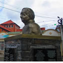

Armenia
Armenia, en el corazón del departamento de Quindío, Colombia, es una ciudad conocida por su destacada producción de café, su entorno natural de montañas y valles, su rica cultura cafetera y gastronomía regional, su clima templado durante todo el año, y su arquitectura que combina elementos modernos y tradicionales
Calarcá
Calarcá, situada en el departamento de Quindío, Colombia, es una encantadora ciudad conocida por su cercanía a la ciudad de Armenia y su papel como entrada al Eje Cafetero. Rodeada de exuberantes montañas y colinas, Calarcá ofrece un entorno pintoresco con una rica herencia cafetera y una vibrante cultura local. Sus calles empedradas y coloridas casas tradicionales crean una atmósfera acogedora
Barcelona
Barcelona, es una pequeña y apacible localidad que destaca por su belleza natural y su ambiente tranquilo. Rodeada de montañas y vegetación exuberante, Barcelona ofrece a sus visitantes un entorno ideal para el descanso y la conexión con la naturaleza. Sus calles pintorescas y su arquitectura típica de la región cafetera colombiana brindan un encanto rural único. Gracias a esto es un destino atractivo para aquellos que buscan alejarse del ajetreo de la vida urbana y disfrutar de la serenidad de la zona cafetera de Colombia.
Salento

Salento, ubicado en el departamento de Quindío, Colombia, es un pintoresco pueblo colonial enclavado en las montañas andinas, famoso por su arquitectura colorida y calles empedradas que lo convierten en un destino encantador para los visitantes. Rodeado de exuberantes paisajes de montañas y cafetales, Salento es también la puerta de entrada al famoso Valle de Cocora, hogar de los icónicos árboles de cera y un impresionante paraje natural.
Filandia
Filandia es un encantador pueblo que se destaca por su arquitectura colonial pintoresca, con casas de colores vivos que adornan sus calles, creando un ambiente alegre y acogedor. Su plaza principal es el corazón de la comunidad, rodeada de restaurantes, tiendas de artesanías y cafeterías, perfecta para relajarse y disfrutar de la atmósfera tranquila.
Circasia
Circasia se encuentra inmerso en la región cafetera, rodeado de exuberantes montañas y paisajes naturales impresionantes. Su encanto reside en su arquitectura colonial, con calles pintorescas y casas coloridas que le otorgan un ambiente acogedor. Además, Circasia es un lugar donde la cultura del café desempeña un papel fundamental, con fincas cercanas que permiten a los visitantes conocer de cerca el proceso de producción de uno de los mejores cafés de Colombia.
Buenavista
Buenavista es un pintoresco pueblo que se encuentra en el corazón de la región cafetera, rodeado de exuberantes montañas y paisajes naturales impresionantes. La arquitectura colonial es una característica distintiva de Buenavista, con calles adoquinadas y casas de colores vivos que le dan un encanto especial.
La cultura del café es fundamental en la vida de este municipio, con numerosas fincas cafeteras que permiten a los visitantes explorar y aprender sobre el proceso de producción del café colombiano. Además, la iglesia local, que refleja la rica historia y la influencia cultural de la región, es un punto de referencia importante en el pueblo.
Cordoba
Cordoba es un encantador pueblo que se caracteriza por su ambiente tranquilo y su belleza natural. Rodeado de montañas y campos verdes, Córdoba ofrece un paisaje pintoresco que atrae a quienes buscan un escape de la vida urbana.
La arquitectura de Córdoba refleja su historia colonial, con calles adoquinadas y casas de estilo tradicional que le dan un aspecto nostálgico. El pueblo es conocido por su hospitalidad y su comunidad acogedora que se enorgullece de su cultura y tradiciones locales.
Además, Córdoba se encuentra en la región cafetera de Colombia, lo que significa que los visitantes pueden explorar fincas cercanas para conocer de cerca el proceso de cultivo y producción del café, una parte importante de la vida en esta área.
Pijao
Pijao es un pintoresco pueblo que se caracteriza por su ambiente tranquilo y su belleza natural. Rodeado de montañas y paisajes exuberantes, Pijao ofrece una escapada serena de la vida urbana.
La arquitectura de Pijao refleja su rica historia colonial, con calles adoquinadas y casas de estilo tradicional que crean una atmósfera nostálgica. El pueblo es conocido por su hospitalidad y la calidez de su comunidad, que se enorgullece de sus tradiciones y cultura locales.
La tebaida

La Tebaida se encuentra en la región cafetera del país y es conocido por su belleza natural y su papel en la producción de café de alta calidad.
La Tebaida cuenta con una arquitectura tradicional y encantadora, con calles adoquinadas y casas coloridas que le otorgan un ambiente pintoresco. Además, la iglesia local es un punto de referencia importante que refleja la rica historia y la influencia cultural de la región.
Dentro de sus alrededores, los visitantes pueden explorar fincas cafeteras cercanas para aprender sobre el proceso de cultivo y producción del café colombiano, lo que añade un componente educativo y cultural a la visita.
Montenegro
Montenegro se caracteriza por su arquitectura colonial bien conservada, con calles adoquinadas y casas de colores vibrantes que le dan un aspecto pintoresco y alegre. La plaza principal es un punto focal del municipio, rodeada de restaurantes, tiendas de artesanías y cafeterías, creando un ambiente acogedor y animado.
La cultura del café es una parte integral de la vida en Montenegro. Los visitantes tienen la oportunidad de explorar fincas cafeteras cercanas para aprender sobre el proceso de cultivo y producción del café colombiano, desde la cosecha de los granos hasta la preparación de la taza perfecta.
Quimbaya
Quimbaya es un municipio ubicado en el departamento de Quindío, Colombia.
Es conocido por su arquitectura colonial, casas de colores vibrantes y calles adoquinadas que le dan un aspecto pintoresco.La cultura del café es esencial en Quimbaya, donde los visitantes pueden explorar fincas cercanas y aprender sobre el proceso de cultivo y producción del café colombiano.
La región también ofrece belleza natural con montañas, ríos y vegetación exuberante, lo que la convierte en un lugar propicio para actividades al aire libre. La comunidad local es hospitalaria y se enorgullece de sus tradiciones culturales, lo que brinda a los visitantes la oportunidad de experimentar la autenticidad de la vida en Quimbaya.
Genova
La cultura del café es fundamental en Genova, y los visitantes pueden disfrutar de la oportunidad de visitar fincas cafeteras locales para aprender sobre el proceso de cultivo y producción del café colombiano.
Además de la cultura del café, la región ofrece oportunidades para actividades al aire libre, como el senderismo y el ciclismo, gracias a su belleza natural y sus montañas escénicas.
El clima fresco de Génova a lo largo del año lo hace especialmente atractivo para aquellos que buscan escapar del calor. La comunidad local es hospitalaria y mantiene vivas sus tradiciones culturales, lo que permite a los visitantes experimentar la autenticidad de la vida en Génova.
Copyright © 2018 - All Rights Reserved - VisitaQuindio
Template by OS Templates